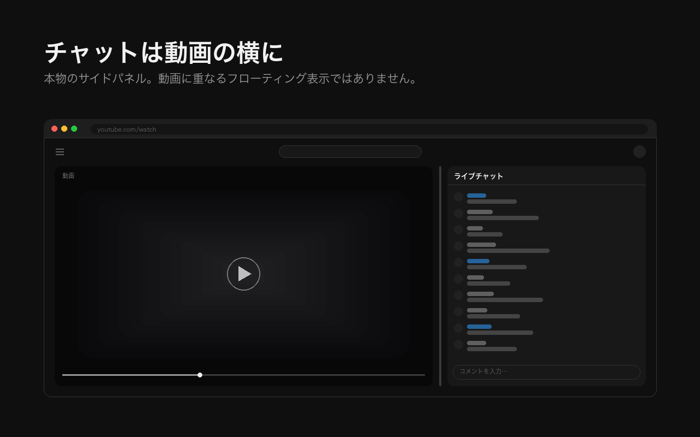
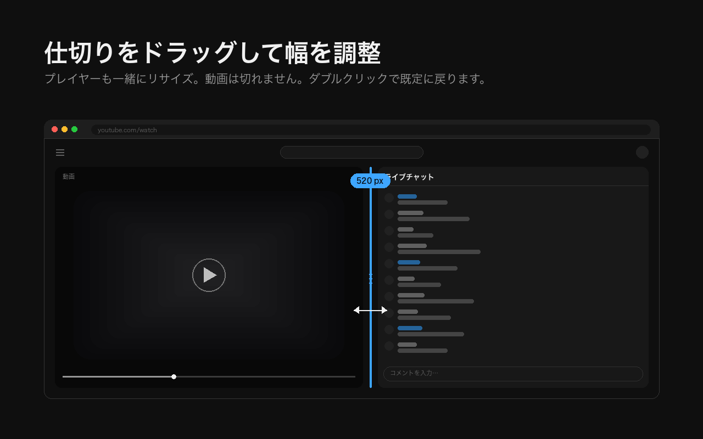
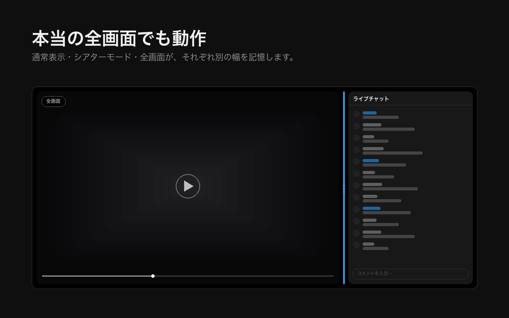
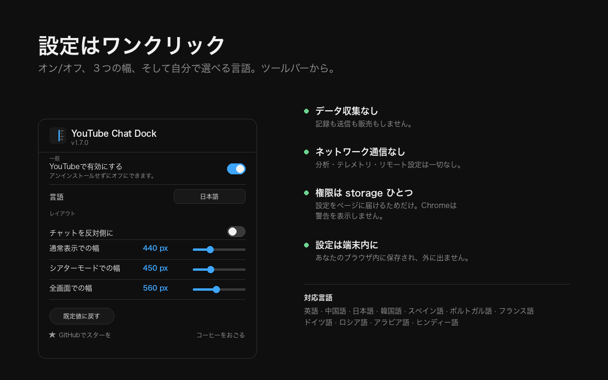

| 拡張機能のバージョン | 2.0.2 |
|---|---|
| 料金とライセンス | 無料・オープンソース、MITライセンス |
| 対象 | 既存のYouTubeライブチャットとチャットリプレイ。チャットがない動画に新しく作る機能はありません |
| 表示モード | 通常表示・シアターモード・全画面で、それぞれ別の幅を保存 |
| 必要な表示領域 | 仕切りには幅1000 CSSピクセル以上が必要。チャット幅は最小120 CSSピクセルで、上限は空き領域によります |
収録済みのデモです。利用条件と制限についてはFAQをご確認ください。

YouTubeのライブチャットを動画の横に並べるには？
ChromeウェブストアからYouTube Chat Dockをインストールし、YouTubeを再読み込みします。ライブチャットまたはチャットリプレイがある動画を開き、幅1000 CSSピクセル以上のデスクトップ表示で仕切りをドラッグすると、既存のチャットを動画の横でリサイズできます。
YouTube Chat Dockは、すでにページにあるチャットのレイアウトを組み替えるだけです。ですからチャットはYouTube純正のまま、スーパーチャットもスタンプもモデレーション機能もメンバーバッジもそのまま動きます。作り直しても、経由させてもいません。変わるのは、チャットがどこに置かれ、どれだけの幅を持つかだけです。
YouTubeのライブチャットの幅は変えられる？
はい、動画とチャットのあいだの仕切りをドラッグします。通常表示・シアターモード・全画面はそれぞれ別の幅を記憶するので、全画面にしてもレイアウトが崩れません。
- 仕切りをドラッグして最小120 CSSピクセルから調整できます。上限は表示領域の空きによります。
- 仕切りをダブルクリックすると既定の幅に戻ります。
- 仕切りにフォーカスして矢印キーでも調整できます。Shiftで大きく、HomeとEndで最小・最大へ。
- 仕切りにマウスを重ねて左右切り替えを押すか、設定パネルで切り替えます。選択は保存されます。
- 設定パネルのスライダーでも変更でき、ドラッグ中に反映されます。

シアターモードでチャットの幅を変えられないのはなぜ？
YouTube標準のシアターモードでは、チャット幅をYouTube側が決めます。YouTube Chat Dockはドラッグ可能な仕切りを追加し、チャット幅とプレイヤーの大きさを一緒に調整します。表示領域の幅は1000 CSSピクセル以上必要です。
YouTubeの以前の挙動はこれとは違いました。プレイヤーを狭めて横に領域を確保し、その領域を空のまま残してチャットを動画の下に置いていた——「シアターモードでチャットが動画の下に行く」という声はここから来ています。当時も拡張機能の有無で実測して同一だったので、拡張機能が壊していたわけではありません。その後YouTube側が変更しました。1920×769でライブ配信2本とチャットリプレイ1本を実測したところ、チャットはプレイヤーの横に固定され、スクロールしてもその位置に留まり、関連動画がその下を流れていきます。この拡張機能は現在のレイアウトに従い、幅以外は何も変えません。
全画面でもライブチャットは使える？
YouTube Chat Dockは、本当の全画面でも既存のライブチャットとチャットリプレイを動画の横に配置します。仕切りでチャット幅を変えるとプレイヤーも追従し、動画を切り取らずに表示します。全画面用の幅は個別に保存されます。
詳しい手順：YouTubeライブを全画面にしてもチャットを動画の横に表示する方法

過去の配信のチャットリプレイでも使える？
はい。YouTube Chat Dockは、チャットリプレイが提供されている過去の配信で、チャットを動画の横に配置してリサイズできます。無効または存在しないリプレイを復元する機能ではありません。
全画面にするとチャットリプレイが真っ白になるのはなぜ？
全画面への切り替え後にYouTubeのリプレイが停止し、チャットが空白になる場合があります。拡張機能なしでも発生するこの停止をYouTube Chat Dockが検知し、現在のチャットモードを再選択して再開を試みます。すべての空白表示や通信障害を修復するものではありません。
止まったリプレイを実測すると、メッセージ一覧にはYouTube自身のお知らせが1件あるだけでした。パネルの大きさも表示も正常で、動画も普通に再生されているので、外から見て壊れているようには見えません。チャットのフレームを再読み込みしても直りません。フレームが無効になったトークンを握ったままだからです。チャットのヘッダーでモードを選び直すと直るのは、YouTubeが新しいトークンを取得して一覧を作り直すからです。この拡張機能は「すでに選ばれているモード」を選び直すので、上位のチャットのリプレイはそのままです。設定パネルでオフにもできます。
チャットを左側に移せる？
はい。仕切りにマウスを重ねて左右切り替えを押すか、設定パネルで切り替えます。選択は保存されます。バージョン2.0.2で、右から左のレイアウトを含むYouTubeの新しい固定サイドレールの通常表示での切り替え不具合を修正しました。
設定にはどんな項目がある？
設定パネルにはドッキング、リプレイ修復、ホバー一時停止、言語、左右切り替え、3つの幅スライダー、リセットがあります。ドッキングのスイッチはレイアウトと仕切りを制御し、ホバー一時停止とリプレイ修復は個別のスイッチで制御します。
| 項目 | 動作 |
|---|---|
| YouTubeで有効にする | アンインストールせずにパネルをオフにします |
| チャットリプレイの停止を修復 | 全画面で止まったチャットリプレイを自動で再開します |
| 言語 | ブラウザの言語とは無関係に、12言語から選べます |
| チャットを反対側に | 仕切りの ⇆ ボタンと同じです |
| 3つの幅スライダー | 通常表示・シアターモード・全画面。ドラッグ中もその場で反映されます |
| 既定値に戻す | すべて元に戻します |
| ホバーでチャットを一時停止 | マウスが重なっているあいだメッセージ一覧を固定します |

YouTube Chat Dockはデータを収集する？
拡張機能による自動データ収集、分析、テレメトリ、リモート設定はありません。設定は端末内に保存されます。外部のフィードバックフォームを自分で開いた場合、URLに拡張機能のバージョンと選択中の表示言語が含まれます。送信は任意です。
- 自動データ収集・販売なし。任意のフィードバックは別途送信
- 拡張機能による自動通信・分析・テレメトリなし
- バックグラウンドで動くService Workerなし。YouTube以外では何も動きません
- アカウント不要、ログイン不要、クラウド同期なし
- ホスト権限なし。
youtube.com以外では動作できません - 権限は
storageひとつだけ。Chromeはインストール時に何の警告も出しません
storage権限がある理由はひとつだけです。設定パネルは独立した拡張機能ページなので、それ以外の方法では設定対象のタブに設定を届けられないからです。詳細：store/PRIVACY.md。拡張機能はCSS 1枚、4本のコンテンツスクリプトと設定パネルで構成されます。MITライセンスで、実行時の依存ライブラリはありません。
Edge・Brave・Opera・Arcでも動く？
YouTube Chat Dockは、デスクトップ版Chrome 105以降と互換性のあるChromium系ブラウザ（Edge、Brave、Opera、Vivaldi、Arc）を対象としています。各ブラウザの現行版を個別に検証したものではありません。Firefoxアドオンではありません。
Chromeウェブストアで公開しており、Edgeをはじめ他のChromium系ブラウザからも直接インストールできます。Firefoxアドオンではありません。
対応している言語は？
12言語です。English、繁體中文、简体中文、日本語、한국어、Español、Português、Français、Deutsch、Русский、العربية、हिन्दी。
表示言語はブラウザの言語とは独立して選べます。右から左のレイアウトにも対応しています。
できないことはある？
仕切りを使うには表示領域の幅が1000 CSSピクセル以上必要です。YouTubeのサイトデータを消しても拡張機能側の保存値から復元される場合があるため、初期化には設定パネルのリセットを使ってください。
- 1000 CSSピクセル未満。仕切りは非表示になり、通常表示とシアターの幅調整ルールも適用されません。ホバー一時停止は独立しています。
- 設定の保存。YouTubeのlocalStorageで初回描画に適用し、chrome.storage.localから復元できます。初期化には設定パネルのリセットを使ってください。
インストール方法は？
ChromeウェブストアからYouTube Chat Dockをインストールし、開いているYouTubeタブを再読み込みします。ライブチャットまたはリプレイがある動画でチャットを展開し、仕切りをドラッグしてください。デスクトップの表示領域は幅1000 CSSピクセル以上必要です。
ウェブストアから
Chromeに追加して、YouTubeのタブを再読み込みするだけ。Chromeは何の許可も求めません。
ソースから
リポジトリをクローンし、chrome://extensions/を開いてデベロッパーモードをオンにし、「パッケージ化されていない拡張機能を読み込む」でフォルダを選びます。ビルド不要、依存関係もありません。
メッセージを読むあいだ、チャットのスクロールを止められる？
はい。メッセージ一覧にマウスを重ねるとその場で固定されるので、速いチャットでも読んだりリンクを押したりするあいだ止まっています。新しいメッセージはその下に届き続け、マウスを離すとライブに戻ります。マウス専用です。タッチ画面にはホバーがないので、その場合はYouTube自身のスクロールアップによる一時停止が働きます。設定パネルにオン・オフのスイッチがあります。